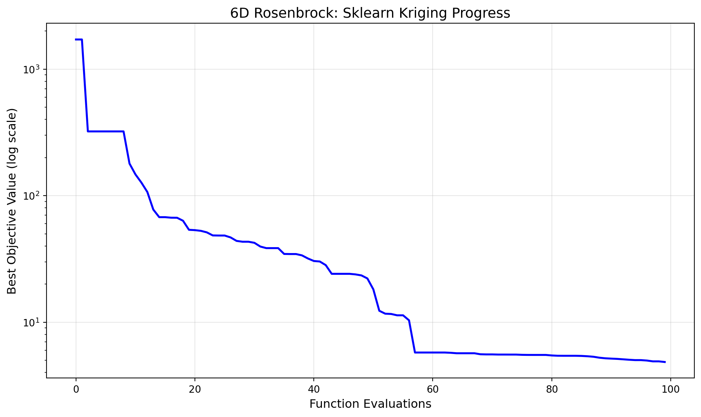
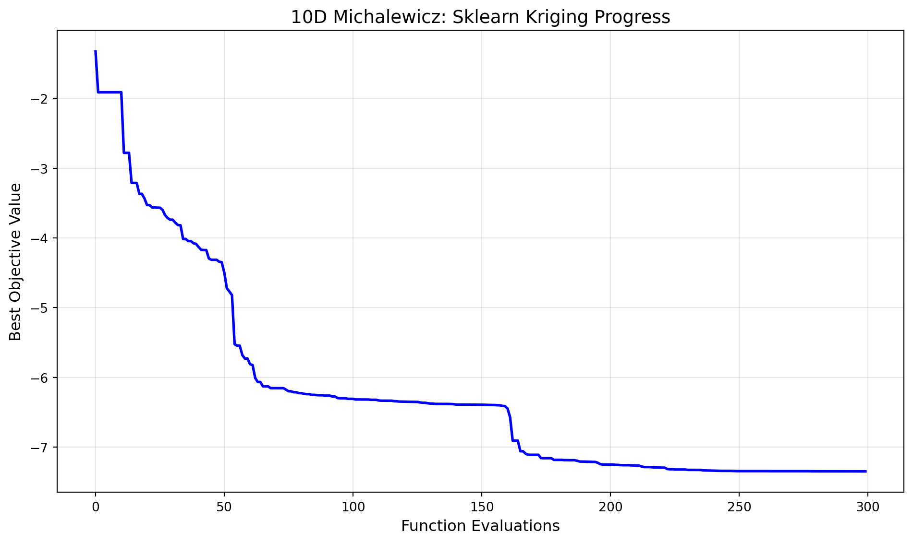

import warnings
warnings.filterwarnings("ignore")
import json
import numpy as np
from spotoptim import SpotOptim
from spotoptim.function import rosenbrock13 Benchmarking SpotOptim with Sklearn Kriging (Matern Kernel) on 6D Rosenbrock and 10D Michalewicz Functions
Note
These test functions were used during the Dagstuhl Seminar 25451 Bayesian Optimisation (Nov 02 – Nov 07, 2025), see here.
This notebook demonstrates the use of SpotOptim with sklearn’s Gaussian Process Regressor as a surrogate model.
13.1 SpotOptim with Sklearn Kriging in 6 Dimensions: Rosenbrock Function
This section demonstrates how to use the SpotOptim class with sklearn’s Gaussian Process Regressor (using Matern kernel) as a surrogate on the 6-dimensional Rosenbrock function. We use a maximum of 100 function evaluations.
13.1.1 Define the 6D Rosenbrock Function
dim = 6
lower = np.full(dim, -2.0)
upper = np.full(dim, 2.0)
bounds = list(zip(lower, upper))
fun = rosenbrock
max_iter = 10013.1.2 Set up SpotOptim Parameters
n_initial = dim
seed = 32113.1.3 Sklearn Gaussian Process Regressor as Surrogate
from sklearn.gaussian_process import GaussianProcessRegressor
from sklearn.gaussian_process.kernels import Matern, ConstantKernel
# Use a Matern kernel instead of the standard RBF kernel
kernel = ConstantKernel(1.0, (1e-2, 1e12)) * Matern(
length_scale=1.0,
length_scale_bounds=(1e-4, 1e2),
nu=2.5
)
surrogate = GaussianProcessRegressor(kernel=kernel, n_restarts_optimizer=100)
# Create SpotOptim instance with sklearn surrogate
opt_rosen = SpotOptim(
fun=fun,
bounds=bounds,
n_initial=n_initial,
max_iter=max_iter,
surrogate=surrogate,
seed=seed,
verbose=1
)
# Run optimization
result_rosen = opt_rosen.optimize()TensorBoard logging disabled
Initial best: f(x) = 321.834153
Iteration 1: f(x) = 3523.035877
Iteration 2: f(x) = 1535.228391
Iteration 3: f(x) = 326.971706
Iteration 4: New best f(x) = 179.355508
Iteration 5: New best f(x) = 147.216352
Iteration 6: New best f(x) = 126.875114
Iteration 7: New best f(x) = 106.904521
Iteration 8: New best f(x) = 77.669128
Iteration 9: New best f(x) = 67.617299
Iteration 10: f(x) = 70.961648
Iteration 11: New best f(x) = 66.967286
Iteration 12: New best f(x) = 66.895363
Iteration 13: New best f(x) = 63.361266
Iteration 14: New best f(x) = 53.734207
Iteration 15: New best f(x) = 53.406010
Iteration 16: New best f(x) = 52.732493
Iteration 17: New best f(x) = 51.288924
Iteration 18: New best f(x) = 48.508851
Iteration 19: New best f(x) = 48.416069
Iteration 20: f(x) = 48.607214
Iteration 21: New best f(x) = 46.770668
Iteration 22: New best f(x) = 43.914540
Iteration 23: New best f(x) = 43.254721
Iteration 24: f(x) = 43.291581
Iteration 25: New best f(x) = 42.411817
Iteration 26: New best f(x) = 39.623988
Iteration 27: New best f(x) = 38.502231
Iteration 28: f(x) = 38.770608
Iteration 29: f(x) = 39.369860
Iteration 30: New best f(x) = 34.632973
Iteration 31: New best f(x) = 34.569160
Iteration 32: f(x) = 35.137815
Iteration 33: New best f(x) = 33.742656
Iteration 34: New best f(x) = 31.884739
Iteration 35: New best f(x) = 30.459009
Iteration 36: New best f(x) = 30.174841
Iteration 37: New best f(x) = 28.255525
Iteration 38: New best f(x) = 24.121792
Iteration 39: f(x) = 24.181482
Iteration 40: f(x) = 24.138016
Iteration 41: f(x) = 24.255060
Iteration 42: New best f(x) = 23.871394
Iteration 43: New best f(x) = 23.436325
Iteration 44: New best f(x) = 22.173239
Iteration 45: New best f(x) = 18.185462
Iteration 46: New best f(x) = 12.317941
Iteration 47: New best f(x) = 11.680706
Iteration 48: New best f(x) = 11.619099
Iteration 49: New best f(x) = 11.339768
Iteration 50: f(x) = 11.435165
Iteration 51: New best f(x) = 10.353561
Iteration 52: New best f(x) = 5.761820
Iteration 53: f(x) = 5.929004
Iteration 54: f(x) = 8.091353
Iteration 55: f(x) = 5.781610
Iteration 56: f(x) = 5.775219
Iteration 57: f(x) = 5.968408
Iteration 58: New best f(x) = 5.733723
Iteration 59: New best f(x) = 5.686104
Iteration 60: f(x) = 5.704052
Iteration 61: f(x) = 5.687804
Iteration 62: f(x) = 5.889423
Iteration 63: New best f(x) = 5.582101
Iteration 64: New best f(x) = 5.567810
Iteration 65: f(x) = 5.599297
Iteration 66: New best f(x) = 5.552732
Iteration 67: f(x) = 5.570675
Iteration 68: New best f(x) = 5.550554
Iteration 69: f(x) = 5.566261
Iteration 70: New best f(x) = 5.524807
Iteration 71: New best f(x) = 5.516099
Iteration 72: New best f(x) = 5.514696
Iteration 73: f(x) = 5.518039
Iteration 74: f(x) = 5.544667
Iteration 75: New best f(x) = 5.462185
Iteration 76: New best f(x) = 5.434393
Iteration 77: New best f(x) = 5.429851
Iteration 78: f(x) = 5.433619
Iteration 79: f(x) = 5.454661
Iteration 80: New best f(x) = 5.416503
Iteration 81: New best f(x) = 5.384556
Iteration 82: New best f(x) = 5.336085
Iteration 83: New best f(x) = 5.245265
Iteration 84: New best f(x) = 5.187754
Iteration 85: New best f(x) = 5.158456
Iteration 86: New best f(x) = 5.131915
Iteration 87: New best f(x) = 5.092477
Iteration 88: New best f(x) = 5.052519
Iteration 89: New best f(x) = 5.019587
Iteration 90: f(x) = 5.037044
Iteration 91: New best f(x) = 4.980142
Iteration 92: New best f(x) = 4.906306
Iteration 93: f(x) = 4.960896
Iteration 94: New best f(x) = 4.849446print(f"[6D] Sklearn Kriging: min y = {result_rosen.fun:.4f} at x = {result_rosen.x}")
print(f"Number of function evaluations: {result_rosen.nfev}")
print(f"Number of iterations: {result_rosen.nit}")[6D] Sklearn Kriging: min y = 4.8494 at x = [0.06568329 0.00253728 0.01005153 0.00843757 0.01467048 0.00961113]
Number of function evaluations: 100
Number of iterations: 9413.1.4 Visualize Optimization Progress
import matplotlib.pyplot as plt
# Plot the optimization progress
plt.figure(figsize=(10, 6))
plt.semilogy(np.minimum.accumulate(opt_rosen.y_), 'b-', linewidth=2)
plt.xlabel('Function Evaluations', fontsize=12)
plt.ylabel('Best Objective Value (log scale)', fontsize=12)
plt.title('6D Rosenbrock: Sklearn Kriging Progress', fontsize=14)
plt.grid(True, alpha=0.3)
plt.tight_layout()
plt.show()
13.1.5 Evaluation of Multiple Repeats
To perform 30 repeats and collect statistics:
# Perform 30 independent runs
n_repeats = 30
results = []
print(f"Running {n_repeats} independent optimizations...")
for i in range(n_repeats):
kernel_i = ConstantKernel(1.0, (1e-2, 1e12)) * Matern(
length_scale=1.0,
length_scale_bounds=(1e-4, 1e2),
nu=2.5
)
surrogate_i = GaussianProcessRegressor(kernel=kernel_i, n_restarts_optimizer=100)
opt_i = SpotOptim(
fun=fun,
bounds=bounds,
n_initial=n_initial,
max_iter=max_iter,
surrogate=surrogate_i,
seed=seed + i, # Different seed for each run
verbose=0
)
result_i = opt_i.optimize()
results.append(result_i.fun)
if (i + 1) % 10 == 0:
print(f" Completed {i + 1}/{n_repeats} runs")
# Compute statistics
mean_result = np.mean(results)
std_result = np.std(results)
min_result = np.min(results)
max_result = np.max(results)
print(f"\nResults over {n_repeats} runs:")
print(f" Mean of best values: {mean_result:.6f}")
print(f" Std of best values: {std_result:.6f}")
print(f" Min of best values: {min_result:.6f}")
print(f" Max of best values: {max_result:.6f}")13.2 SpotOptim with Sklearn Kriging in 10 Dimensions: Michalewicz Function
This section demonstrates how to use the SpotOptim class with sklearn’s Gaussian Process Regressor (using Matern kernel) as a surrogate on the 10-dimensional Michalewicz function. We use a maximum of 300 function evaluations.
13.2.1 Define the 10D Michalewicz Function
from spotoptim.function import michalewicz
dim = 10
lower = np.full(dim, 0.0)
upper = np.full(dim, np.pi)
bounds = list(zip(lower, upper))
fun = michalewicz
max_iter = 30013.2.2 Set up SpotOptim Parameters
n_initial = dim
seed = 32113.2.3 Sklearn Gaussian Process Regressor as Surrogate
from sklearn.gaussian_process import GaussianProcessRegressor
from sklearn.gaussian_process.kernels import Matern, ConstantKernel
# Use a Matern kernel instead of the standard RBF kernel
kernel = ConstantKernel(1.0, (1e-2, 1e12)) * Matern(
length_scale=1.0,
length_scale_bounds=(1e-4, 1e2),
nu=2.5
)
surrogate = GaussianProcessRegressor(kernel=kernel, n_restarts_optimizer=100)
# Create SpotOptim instance with sklearn surrogate
opt_micha = SpotOptim(
fun=fun,
bounds=bounds,
n_initial=n_initial,
max_iter=max_iter,
surrogate=surrogate,
seed=seed,
verbose=1
)
# Run optimization
result_micha = opt_micha.optimize()TensorBoard logging disabled
Initial best: f(x) = -1.909129
Iteration 1: f(x) = -0.471751
Iteration 2: New best f(x) = -2.778226
Iteration 3: f(x) = -1.577058
Iteration 4: f(x) = -1.694359
Iteration 5: New best f(x) = -3.210641
Iteration 6: f(x) = -2.819606
Iteration 7: f(x) = -2.982698
Iteration 8: New best f(x) = -3.366470
Iteration 9: f(x) = -3.201759
Iteration 10: New best f(x) = -3.432570
Iteration 11: New best f(x) = -3.527877
Iteration 12: f(x) = -3.504520
Iteration 13: New best f(x) = -3.562644
Iteration 14: f(x) = -3.547038
Iteration 15: New best f(x) = -3.565505
Iteration 16: f(x) = -3.553183
Iteration 17: New best f(x) = -3.595616
Iteration 18: New best f(x) = -3.671383
Iteration 19: New best f(x) = -3.713695
Iteration 20: New best f(x) = -3.737969
Iteration 21: f(x) = -3.727671
Iteration 22: New best f(x) = -3.781389
Iteration 23: New best f(x) = -3.815294
Iteration 24: New best f(x) = -3.817426
Iteration 25: New best f(x) = -4.013697
Iteration 26: f(x) = -3.999787
Iteration 27: New best f(x) = -4.044009
Iteration 28: f(x) = -4.038050
Iteration 29: New best f(x) = -4.073980
Iteration 30: New best f(x) = -4.084493
Iteration 31: New best f(x) = -4.128250
Iteration 32: New best f(x) = -4.168658
Iteration 33: New best f(x) = -4.172880
Iteration 34: f(x) = -4.146185
Iteration 35: New best f(x) = -4.293347
Iteration 36: New best f(x) = -4.312362
Iteration 37: f(x) = -4.289076
Iteration 38: f(x) = -4.294401
Iteration 39: New best f(x) = -4.339989
Iteration 40: New best f(x) = -4.347110
Iteration 41: New best f(x) = -4.496414
Iteration 42: New best f(x) = -4.720985
Iteration 43: New best f(x) = -4.769322
Iteration 44: New best f(x) = -4.820892
Iteration 45: New best f(x) = -5.523194
Iteration 46: New best f(x) = -5.544444
Iteration 47: f(x) = -5.485251
Iteration 48: New best f(x) = -5.679042
Iteration 49: New best f(x) = -5.728856
Iteration 50: f(x) = -5.713454
Iteration 51: New best f(x) = -5.810308
Iteration 52: New best f(x) = -5.822810
Iteration 53: New best f(x) = -6.007102
Iteration 54: New best f(x) = -6.065657
Iteration 55: f(x) = -5.894116
Iteration 56: New best f(x) = -6.128321
Iteration 57: f(x) = -6.117134
Iteration 58: f(x) = -6.089022
Iteration 59: New best f(x) = -6.153586
Iteration 60: f(x) = -6.153496
Iteration 61: New best f(x) = -6.154117
Iteration 62: f(x) = -6.145165
Iteration 63: f(x) = -6.153499
Iteration 64: f(x) = -6.147537
Iteration 65: New best f(x) = -6.176618
Iteration 66: New best f(x) = -6.198679
Iteration 67: New best f(x) = -6.199809
Iteration 68: New best f(x) = -6.212758
Iteration 69: f(x) = -6.209788
Iteration 70: New best f(x) = -6.225959
Iteration 71: f(x) = -6.221108
Iteration 72: New best f(x) = -6.235835
Iteration 73: New best f(x) = -6.239913
Iteration 74: f(x) = -6.236491
Iteration 75: New best f(x) = -6.249874
Iteration 76: f(x) = -6.248650
Iteration 77: New best f(x) = -6.254337
Iteration 78: New best f(x) = -6.255686
Iteration 79: f(x) = -6.253849
Iteration 80: New best f(x) = -6.260994
Iteration 81: f(x) = -6.260993
Iteration 82: f(x) = -6.260468
Iteration 83: New best f(x) = -6.274534
Iteration 84: New best f(x) = -6.274590
Iteration 85: New best f(x) = -6.296523
Iteration 86: New best f(x) = -6.298934
Iteration 87: New best f(x) = -6.299100
Iteration 88: f(x) = -6.298132
Iteration 89: New best f(x) = -6.307340
Iteration 90: New best f(x) = -6.307582
Iteration 91: New best f(x) = -6.307747
Iteration 92: New best f(x) = -6.316321
Iteration 93: f(x) = -6.316074
Iteration 94: f(x) = -6.314603
Iteration 95: New best f(x) = -6.316471
Iteration 96: New best f(x) = -6.317010
Iteration 97: New best f(x) = -6.317641
Iteration 98: New best f(x) = -6.321132
Iteration 99: f(x) = -6.320694
Iteration 100: f(x) = -6.319272
Iteration 101: New best f(x) = -6.331238
Iteration 102: New best f(x) = -6.333815
Iteration 103: New best f(x) = -6.334254
Iteration 104: f(x) = -6.334095
Iteration 105: f(x) = -6.333526
Iteration 106: f(x) = -6.313235
Iteration 107: New best f(x) = -6.340705
Iteration 108: New best f(x) = -6.342540
Iteration 109: New best f(x) = -6.346718
Iteration 110: New best f(x) = -6.347457
Iteration 111: f(x) = -6.347277
Iteration 112: New best f(x) = -6.349371
Iteration 113: New best f(x) = -6.349385
Iteration 114: New best f(x) = -6.349796
Iteration 115: New best f(x) = -6.351657
Iteration 116: f(x) = -6.351468
Iteration 117: New best f(x) = -6.358798
Iteration 118: New best f(x) = -6.363537
Iteration 119: f(x) = -6.329287
Iteration 120: New best f(x) = -6.370744
Iteration 121: New best f(x) = -6.375039
Iteration 122: f(x) = -6.364329
Iteration 123: New best f(x) = -6.380095
Iteration 124: New best f(x) = -6.380149
Iteration 125: New best f(x) = -6.380542
Iteration 126: New best f(x) = -6.380722
Iteration 127: f(x) = -6.378664
Iteration 128: f(x) = -6.377485
Iteration 129: New best f(x) = -6.382280
Iteration 130: New best f(x) = -6.383360
Iteration 131: New best f(x) = -6.389637
Iteration 132: f(x) = -6.389593
Iteration 133: New best f(x) = -6.389650
Iteration 134: New best f(x) = -6.389938
Iteration 135: New best f(x) = -6.389962
Iteration 136: f(x) = -6.389737
Iteration 137: New best f(x) = -6.391061
Iteration 138: New best f(x) = -6.391178
Iteration 139: New best f(x) = -6.391350
Iteration 140: f(x) = -6.336366
Iteration 141: New best f(x) = -6.392279
Iteration 142: f(x) = -6.392114
Iteration 143: New best f(x) = -6.394001
Iteration 144: New best f(x) = -6.394823
Iteration 145: New best f(x) = -6.395547
Iteration 146: New best f(x) = -6.396330
Iteration 147: New best f(x) = -6.398681
Iteration 148: New best f(x) = -6.400004
Iteration 149: New best f(x) = -6.408147
Iteration 150: New best f(x) = -6.411590
Iteration 151: New best f(x) = -6.445504
Iteration 152: New best f(x) = -6.570437
Iteration 153: New best f(x) = -6.907678
Iteration 154: f(x) = -6.715445
Iteration 155: f(x) = -6.859522
Iteration 156: New best f(x) = -7.058979
Attempt 2/10: Previous point was duplicate after rounding, trying fallback
Acquisition failure: Using random space-filling design as fallback.
Iteration 157: f(x) = -2.167836
Iteration 158: New best f(x) = -7.092411
Iteration 159: New best f(x) = -7.109979
Iteration 160: f(x) = -7.109543
Iteration 161: f(x) = -7.100065
Iteration 162: f(x) = -7.076225
Iteration 163: f(x) = -7.067143
Iteration 164: New best f(x) = -7.157908
Iteration 165: New best f(x) = -7.158954
Iteration 166: f(x) = -7.155147
Iteration 167: f(x) = -7.156493
Iteration 168: f(x) = -7.112127
Iteration 169: New best f(x) = -7.182645
Attempt 2/10: Previous point was duplicate after rounding, trying fallback
Acquisition failure: Using random space-filling design as fallback.
Iteration 170: f(x) = -1.719617
Iteration 171: f(x) = -7.182247
Iteration 172: New best f(x) = -7.182754
Iteration 173: New best f(x) = -7.186636
Iteration 174: f(x) = -7.172811
Iteration 175: New best f(x) = -7.187552
Iteration 176: f(x) = -7.181461
Iteration 177: f(x) = -7.117022
Iteration 178: New best f(x) = -7.195177
Iteration 179: New best f(x) = -7.206760
Iteration 180: New best f(x) = -7.207315
Iteration 181: New best f(x) = -7.207998
Iteration 182: New best f(x) = -7.209295
Iteration 183: New best f(x) = -7.210453
Iteration 184: New best f(x) = -7.211930
Iteration 185: f(x) = -7.210859
Iteration 186: New best f(x) = -7.223471
Iteration 187: New best f(x) = -7.244183
Iteration 188: New best f(x) = -7.249511
Iteration 189: f(x) = -7.249477
Iteration 190: New best f(x) = -7.249743
Iteration 191: New best f(x) = -7.250388
Iteration 192: f(x) = -7.249115
Iteration 193: New best f(x) = -7.254238
Iteration 194: New best f(x) = -7.255252
Iteration 195: New best f(x) = -7.258149
Iteration 196: New best f(x) = -7.259044
Iteration 197: f(x) = -7.257182
Iteration 198: f(x) = -7.253438
Iteration 199: New best f(x) = -7.261403
Iteration 200: New best f(x) = -7.262523
Iteration 201: New best f(x) = -7.264531
Iteration 202: f(x) = -7.264126
Iteration 203: New best f(x) = -7.276752
Iteration 204: New best f(x) = -7.285664
Iteration 205: New best f(x) = -7.285751
Iteration 206: f(x) = -7.285175
Iteration 207: New best f(x) = -7.287979
Iteration 208: New best f(x) = -7.291624
Iteration 209: New best f(x) = -7.293043
Iteration 210: New best f(x) = -7.293667
Iteration 211: New best f(x) = -7.294087
Iteration 212: New best f(x) = -7.294537
Iteration 213: New best f(x) = -7.313151
Iteration 214: New best f(x) = -7.317460
Iteration 215: f(x) = -7.316577
Iteration 216: New best f(x) = -7.321206
Iteration 217: f(x) = -7.319651
Iteration 218: f(x) = -7.320973
Iteration 219: f(x) = -7.320017
Iteration 220: f(x) = -7.320755
Iteration 221: New best f(x) = -7.326544
Iteration 222: New best f(x) = -7.326676
Iteration 223: New best f(x) = -7.326781
Iteration 224: New best f(x) = -7.327023
Iteration 225: f(x) = -7.325760
Iteration 226: f(x) = -7.325290
Iteration 227: New best f(x) = -7.333735
Iteration 228: New best f(x) = -7.334667
Iteration 229: New best f(x) = -7.336343
Iteration 230: New best f(x) = -7.336379
Iteration 231: New best f(x) = -7.336937
Iteration 232: New best f(x) = -7.338846
Iteration 233: f(x) = -7.324801
Iteration 234: New best f(x) = -7.340357
Iteration 235: f(x) = -7.340331
Iteration 236: New best f(x) = -7.340914
Iteration 237: f(x) = -7.340850
Iteration 238: f(x) = -7.340555
Iteration 239: New best f(x) = -7.342492
Iteration 240: New best f(x) = -7.344282
Iteration 241: f(x) = -1.490073
Iteration 242: f(x) = -1.490414
Iteration 243: New best f(x) = -7.344289
Iteration 244: f(x) = -7.344258
Iteration 245: f(x) = -1.525476
Iteration 246: f(x) = -1.529494
Attempt 2/10: Previous point was duplicate after rounding, trying fallback
Acquisition failure: Using random space-filling design as fallback.
Iteration 247: f(x) = -0.531363
Attempt 2/10: Previous point was duplicate after rounding, trying fallback
Acquisition failure: Using random space-filling design as fallback.
Iteration 248: f(x) = -1.677672
Iteration 249: f(x) = -1.677672
Iteration 250: f(x) = -1.677678
Iteration 251: f(x) = -1.692980
Iteration 252: f(x) = -7.344073
Iteration 253: New best f(x) = -7.345125
Iteration 254: f(x) = -1.717307
Iteration 255: f(x) = -1.780155
Iteration 256: f(x) = -1.788536
Iteration 257: f(x) = -1.788457
Iteration 258: f(x) = -1.789952
Iteration 259: f(x) = -1.790588
Iteration 260: f(x) = -1.752082
Iteration 261: f(x) = -1.533725
Iteration 262: f(x) = -1.323585
Iteration 263: f(x) = -1.326084
Iteration 264: New best f(x) = -7.345244
Iteration 265: New best f(x) = -7.345337
Attempt 2/10: Previous point was duplicate after rounding, trying fallback
Acquisition failure: Using random space-filling design as fallback.
Iteration 266: f(x) = -0.041277
Iteration 267: f(x) = -7.345083
Attempt 2/10: Previous point was duplicate after rounding, trying fallback
Acquisition failure: Using random space-filling design as fallback.
Iteration 268: f(x) = -0.595027
Iteration 269: New best f(x) = -7.346771
Iteration 270: f(x) = -7.346679
Iteration 271: New best f(x) = -7.346822
Iteration 272: New best f(x) = -7.346913
Iteration 273: New best f(x) = -7.347292
Attempt 2/10: Previous point was duplicate after rounding, trying fallback
Acquisition failure: Using random space-filling design as fallback.
Iteration 274: f(x) = -0.192104
Iteration 275: f(x) = -7.347276
Iteration 276: New best f(x) = -7.347393
Iteration 277: New best f(x) = -7.347414
Iteration 278: f(x) = -7.347371
Iteration 279: New best f(x) = -7.347513
Iteration 280: f(x) = -7.347511
Iteration 281: f(x) = -7.347509
Iteration 282: f(x) = -7.347502
Iteration 283: New best f(x) = -7.347541
Iteration 284: f(x) = -7.347522
Iteration 285: New best f(x) = -7.347676
Iteration 286: New best f(x) = -7.347911
Iteration 287: f(x) = -1.793091
Iteration 288: New best f(x) = -7.347957
Iteration 289: f(x) = -7.347953
Iteration 290: f(x) = -7.347944print(f"[10D] Sklearn Kriging: min y = {result_micha.fun:.4f} at x = {result_micha.x}")
print(f"Number of function evaluations: {result_micha.nfev}")
print(f"Number of iterations: {result_micha.nit}")[10D] Sklearn Kriging: min y = -7.3480 at x = [2.20503242 2.71129625 2.21891182 2.48213434 2.36018149 2.02745108
1.87714802 1.36056791 1.28302799 1.21719709]
Number of function evaluations: 300
Number of iterations: 29013.2.4 Visualize Optimization Progress
import matplotlib.pyplot as plt
# Plot the optimization progress
plt.figure(figsize=(10, 6))
plt.plot(np.minimum.accumulate(opt_micha.y_), 'b-', linewidth=2)
plt.xlabel('Function Evaluations', fontsize=12)
plt.ylabel('Best Objective Value', fontsize=12)
plt.title('10D Michalewicz: Sklearn Kriging Progress', fontsize=14)
plt.grid(True, alpha=0.3)
plt.tight_layout()
plt.show()
13.2.5 Evaluation of Multiple Repeats
To perform 30 repeats and collect statistics:
# Perform 30 independent runs
n_repeats = 30
results = []
print(f"Running {n_repeats} independent optimizations...")
for i in range(n_repeats):
kernel_i = ConstantKernel(1.0, (1e-2, 1e12)) * Matern(
length_scale=1.0,
length_scale_bounds=(1e-4, 1e2),
nu=2.5
)
surrogate_i = GaussianProcessRegressor(kernel=kernel_i, n_restarts_optimizer=100)
opt_i = SpotOptim(
fun=fun,
bounds=bounds,
n_initial=n_initial,
max_iter=max_iter,
surrogate=surrogate_i,
seed=seed + i, # Different seed for each run
verbose=0
)
result_i = opt_i.optimize()
results.append(result_i.fun)
if (i + 1) % 10 == 0:
print(f" Completed {i + 1}/{n_repeats} runs")
# Compute statistics
mean_result = np.mean(results)
std_result = np.std(results)
min_result = np.min(results)
max_result = np.max(results)
print(f"\nResults over {n_repeats} runs:")
print(f" Mean of best values: {mean_result:.6f}")
print(f" Std of best values: {std_result:.6f}")
print(f" Min of best values: {min_result:.6f}")
print(f" Max of best values: {max_result:.6f}")13.3 Comparison: SpotOptim vs SpotPython
The SpotOptim package provides a scipy-compatible interface for Bayesian optimization with the following key features:
- Scipy-compatible API: Returns
OptimizeResultobjects that work seamlessly with scipy’s optimization ecosystem - Custom Surrogates: Supports any sklearn-compatible surrogate model (as demonstrated with GaussianProcessRegressor)
- Flexible Interface: Simplified parameter specification with bounds, n_initial, and max_iter
- Analytical Test Functions: Built-in test functions (rosenbrock, ackley, michalewicz) for benchmarking
The main differences from spotpython are:
- SpotOptim: Uses
bounds,n_initial,max_iterparameters with scipy-style interface - SpotPython: Uses
fun_control,design_control,surrogate_controlwith more complex configuration
Both packages support custom surrogates and provide powerful Bayesian optimization capabilities.
13.4 Summary
This notebook demonstrated how to:
- Use
SpotOptimwith sklearn’s Gaussian Process Regressor (Matern kernel) as a surrogate - Optimize 6D Rosenbrock function with 100 evaluations
- Optimize 10D Michalewicz function with 300 evaluations
- Visualize optimization progress
- Perform multiple independent runs for statistical analysis
The results show that SpotOptim with sklearn surrogates provides effective Bayesian optimization for challenging benchmark functions.
13.5 Jupyter Notebook
Note
- This Quarto document is part of the spotoptim package benchmarking suite
- Source available at: spotoptim GitHub Repository